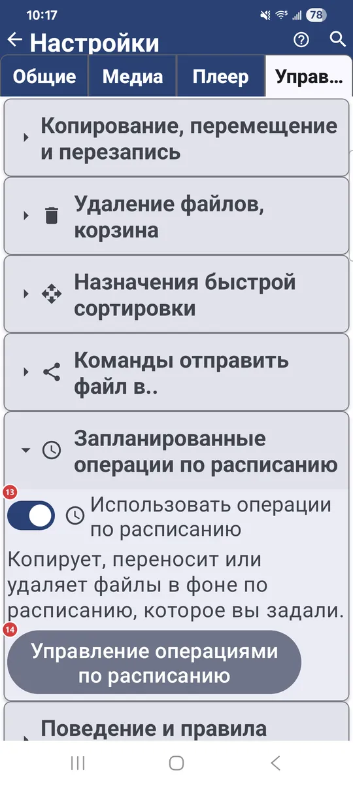
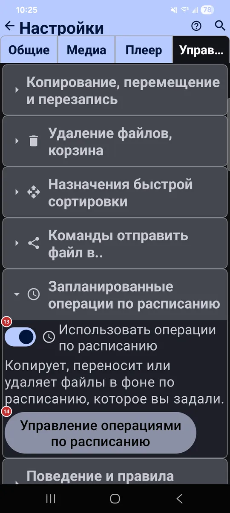

Настройки: Управление
Для чего этот экран
На вкладке «Управление» вы настраиваете, как копируются, перемещаются и удаляются файлы, какие ресурсы служат назначениями быстрой сортировки, что приложение записывает и делает в фоне и какие дополнительные программы и жесты включены.


Порядок действий
Единого порядка здесь нет - каждый параметр работает сам по себе. Ниже они сгруппированы по тем же заголовкам разделов, что и на вкладке. Некоторые группы, например «Wear-компаньон» или запланированные операции, есть только там, где их поддерживают устройство или версия приложения.
Элементы
Копирование, перемещение и перезапись
1Разрешить копированиеРазрешает копировать файлы в папки-назначения.
Вместе с назначениями быстрой сортировки ниже позволяет копировать текущий файл одним нажатием.
2Перезаписывать при копированииЗаменяет файл с тем же именем при копировании.
Действует, когда в назначении уже лежит файл с таким именем.
- Отмена
- Перезаписанный файл заменяется новым, поэтому не включайте параметр, если не уверены.
3Переходить к следующему после копированияПереходит к следующему файлу после успешного копирования.
Ускоряет разбор пачки файлов: вручную переходить не нужно.
4Разрешить перемещениеРазрешает перемещать файлы в папки-назначения.
Вместе с назначениями быстрой сортировки ниже позволяет переместить текущий файл одним нажатием.
5Перезаписывать при перемещенииЗаменяет файл с тем же именем при перемещении.
Действует, когда в назначении уже лежит файл с таким именем.
- Отмена
- Перезаписанный файл заменяется новым, поэтому не включайте параметр, если не уверены.
Удаление файлов, корзина
6Включить безопасный режимСпрашивает подтверждение перед удалением и перемещением.
Когда режим включён, приложение спрашивает перед удалением или перемещением файлов, чтобы не потерять данные случайно. Два параметра ниже включают вопросы по отдельности.
7Подтверждать удалениеСпрашивает подтверждение перед удалением файлов.
У вкладки «Плеер» есть свой переключатель для удаления внутри плеера.
8Подтверждать перемещениеСпрашивает подтверждение перед перемещением файлов.
Перемещение меняет место файла, поэтому вопрос даёт возможность остановиться.
9Использовать корзину (.trash)Отправляет удалённые файлы в скрытую папку .trash, а не стирает их насовсем.
На локальных ресурсах файл можно вернуть кнопкой «Отменить», пока ресурс не закрыт. Сетевые и облачные файлы всегда удаляются безвозвратно. В Android 12 и новее некоторым общим папкам нужно разрешение «Управление медиафайлами»; без него удаление может стать необратимым. Когда параметр выключен, файлы удаляются сразу, а место освобождается немедленно.
- Отмена
- Корзина - это страховка, а не архив: если очистить её кнопкой «Удалить всё в корзине», эти файлы пропадут насовсем.
Назначения быстрой сортировки
10Макс. назначений (1-30)Ограничивает число назначений быстрой сортировки.
От 1 до 30. У каждого назначения есть номер и цвет, чтобы его было легко узнать.
11+ ДобавитьОтмечает ещё один ресурс как назначение быстрой сортировки.
Кнопка появляется, когда есть ресурсы, которые ещё не стали назначениями. Сначала добавьте ресурсы в списке ресурсов, а потом отметьте их здесь.
12Назначения быстрой сортировкиВаши назначения быстрой сортировки по порядку номеров.
В строке видны номер и цвет назначения, его имя и путь. Стрелки меняют порядок, а кнопка удаления убирает назначение из списка.
- Отмена
- Удаление назначения лишь снимает отметку с ресурса. Сам ресурс и его файлы остаются на месте.
Запланированные операции по расписанию
13Использовать операции по расписаниюВключает и выключает запуск по расписанию.
Пока параметр выключен, ничего не запускается по расписанию, но ваши операции сохраняются. Включите, и они продолжат работу.
14Управление операциями по расписаниюОткрывает окно, где вы создаёте запланированные операции и управляете ими.
Запланированная операция копирует, перемещает или удаляет файлы в фоне по расписанию, которое вы задаёте.
Поведение и правила программы
15Показывать детальные ошибкиПоказывает полные сведения об ошибке вместо упрощённых сообщений.
Пригодится, когда вы ищете причину проблемы или сообщаете о ней.
16Продолжать воспроизведение при следующем запускеОткрывает последний проигрываемый файл при запуске приложения.
Воспроизведение продолжается с того места, где вы остановились.
17Запоминать списки файлов (по умолчанию для новых ресурсов)Сохраняет список файлов новых ресурсов, чтобы они открывались быстрее.
После сканирования список хранится в базе приложения, и в следующий раз загружается сразу. Чтобы подхватить изменения, сделанные вне приложения, нажмите «Обновить». Это лишь значение по умолчанию для новых ресурсов.
Фотографирование
18Включить съёмку фотоПоказывает команду камеры в браузере файлов.
Новые фото сохраняются в ресурс, который вы просматриваете. Рядом есть параметры: спрашивать имя файла, открывать фото для правки, копировать его в буфер обмена, добавлять геометку и выбрать другое место сохранения.
Видеосъёмка
19Включить запись видеоПоказывает команду записи видео прямо в текущий ресурс.
Дополнительный параметр открывает готовое видео в плеере, а ещё можно выбрать другую папку для сохранения.
Диктофон
20Включить запись с микрофонаПоказывает кнопку микрофона в браузере файлов.
Звук записывается в выбранный ресурс или в папку Downloads. Можно также включить вопрос об имени файла при каждой записи.
Запись видео с экрана
21Видеозапись экранаЗаписывает весь экран в видеофайл со звуком с микрофона.
Во время записи появляются кнопка остановки и таймер. Место сохранения видео можно выбрать.
Wear-компаньон
22Wear-компаньонПоказывает Wear-компаньон в панели программ и в меню.
Включите, если у вас есть часы с Wear OS. Компаньон открывается оттуда и решает, чем этот телефон делится с часами.
Дополнительные программы и сценарии
23Быстрый перевод с камерыВключает быстрый сценарий: фото, распознавание текста и перевод.
Сделайте снимок, и приложение распознает текст и переведёт его. Дополнительный параметр пропускает перевод и показывает распознанный текст как есть.
24КалькуляторДобавляет программу «Калькулятор».
Она появляется в меню программ, на панели быстрого доступа и на рабочем столе лаунчера.
25СекундомерДобавляет программу «Секундомер».
Она появляется в меню программ, на панели быстрого доступа и на рабочем столе лаунчера. Её настройки - строкой ниже.
26Сетевой мониторДобавляет диагностическую программу для сети.
Она показывает соединение, уровень сигнала и сведения о сети.
27Сведения о системеПоказывает сведения о системе в панели программ и в меню.
Включите, чтобы открывать их, не заходя в настройки.
Взаимодействие с операционной системой
28Запретить сон устройстваНе гасит экран, пока вы пользуетесь приложением.
Пока вы смотрите медиафайлы, устройство не засыпает и не тускнеет ни при воспроизведении, ни при просмотре.
29При получении ссылки - скачатьСкачивает файл по ссылке, присланной в приложение.
Когда вы делитесь с FastMediaSorter ссылкой http(s), файл по ссылке загружается в выбранный ресурс. Дополнительный параметр сразу открывает его во встроенном плеере после успешной загрузки; иначе вы увидите короткое сообщение.
30Добавить виджет на домашний экран Android..Позволяет поместить виджет приложения на домашний экран Android.
Выберите виджет и разместите его на домашнем экране.
31Задать по-умолчаниюОткрывает окно, где FastMediaSorter можно назначить приложением по умолчанию.
В нём по кнопке на каждый тип файлов - изображения, аудио, видео и документы - и два переключателя: показывать приложение в «Открыть с помощью» и обрабатывать медиакнопки, а также принимать файлы из других приложений. Всё применяется сразу.
Жесты с краёв экрана
32Оверлей жестовПоказывает тонкие полосы жестов по краям экрана поверх других приложений.
До четырёх полос, по две с каждой стороны. Свайп от полосы запускает назначенное действие: скриншот, камеру, фонарик, громкость или яркость, открытие приложения. Нужно разрешение «Поверх других приложений».
33Настроить жестыОткрывает настройку жестов с краёв экрана.
Выберите, какие зоны включены, видны ли их подсказки и какое действие назначено на каждое направление свайпа: вверх, вниз или внутрь.
Управление и клавиши
34Управление и клавишиОткрывает переназначение клавиш и кнопок для управления медиа.
Любую команду можно назначить на кнопку D-pad, кнопку геймпада, клавишу клавиатуры или кнопку мыши.
Сброс
35Сбросить настройки управленияВозвращает к значениям по умолчанию только эту вкладку.
Настройки на других вкладках сохраняются. Перед сбросом приложение просит подтвердить действие.